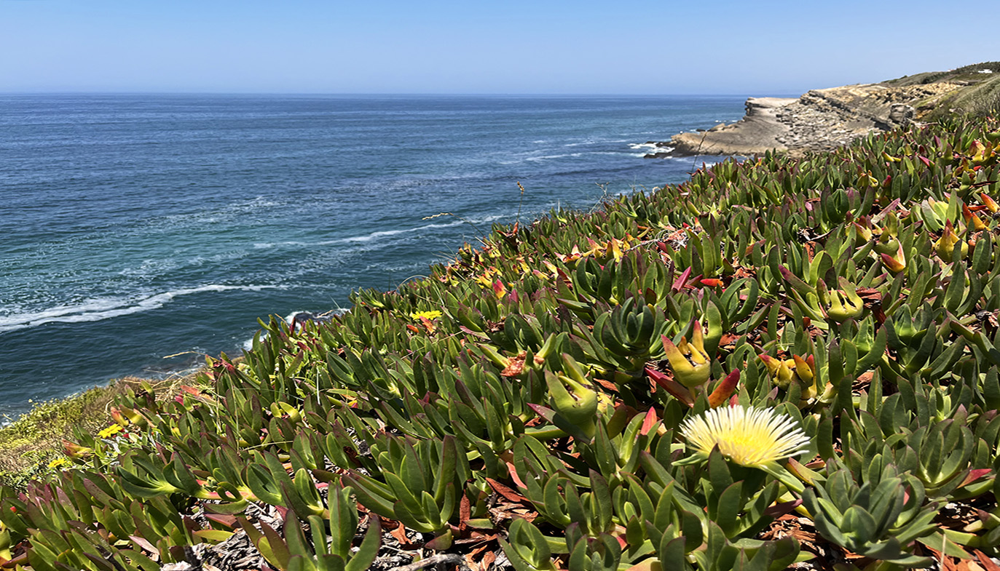

Environmental changes resulting from our activities are increasing the pace of species and habitat loss, impacting our global economy and ecosystem services we rely on. Forecasted environmental changes will also accelerate the emergence of novel human-infecting pathogens with pandemic potential.
Consequently, it has become clear that the health and future of our species is intimately linked with the health and future of the planet’s biodiversity and environments.
Although evolutionary biology has classically been regarded as a historical science, my work has underscored its importance for such developing innovative research programs that can be deployed at the intersection between humanity, the world’s biota, and our shared ecosystems. Incorporating tools and techniques from evolutionary biology into informatics and -omics approaches allow me to not only learn of the history of life, but also from it. This evolutionary informatic approach can leverage the power of increasingly massive biological and -omic data and positions me to achieve
my lab’s mission of guiding effective stewardship of our planet and responses to human health threats through research. Our Role
My research is derived from a core foundation in phylogenomics, macroevolution, and immunogenetics. By maintaining these strong core research areas, I am able to leverage my research and computational experience into novel evolutionary informatic analyses for multi/interdisciplinary projects. For example, my pioneering integration of evolutionary and immunological data remains uniquely informative regarding the immunology of SARS-CoV-2 prophylaxis. This example illustrates how my core foundational strengths allow me to develop evolutionary informatic applications with high contemporary relevance for human health.
In my research program I emphasize the study of ray-finned fishes (Actinopterygians). Actinopterygians comprise one out of every two vertebrates and include numerous species of ecological, economic, and research importance. I routinely conduct short-term research projects aimed at filling critical knowledge gaps in our understanding of these diverse organisms. My long-term research projects build upon these insights to
Collectively, these findings can provide necessary historical context that facilitates accurate projection of the resilience of biodiversity over the next century.